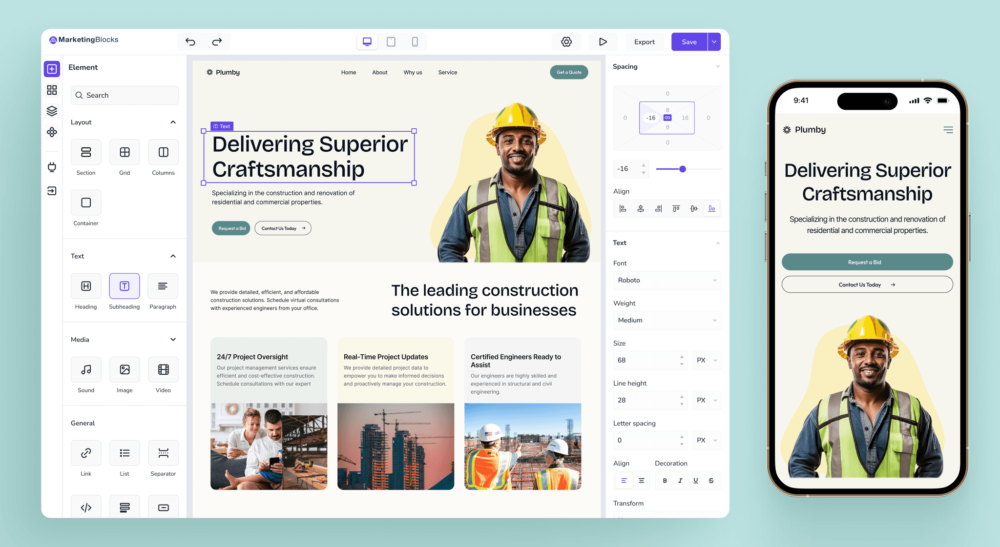
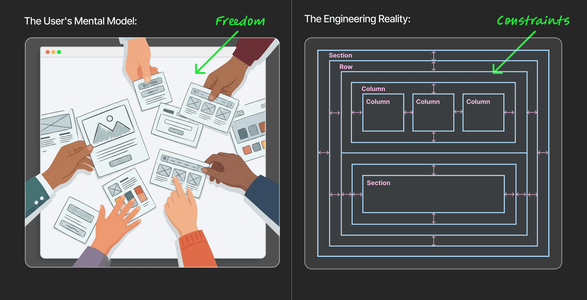
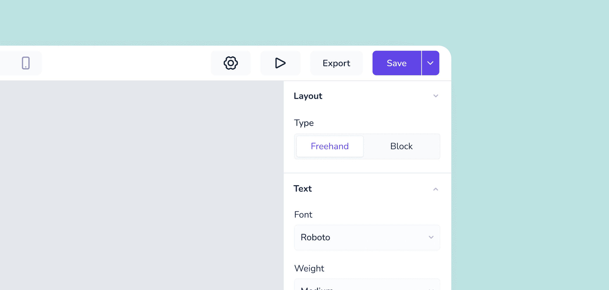
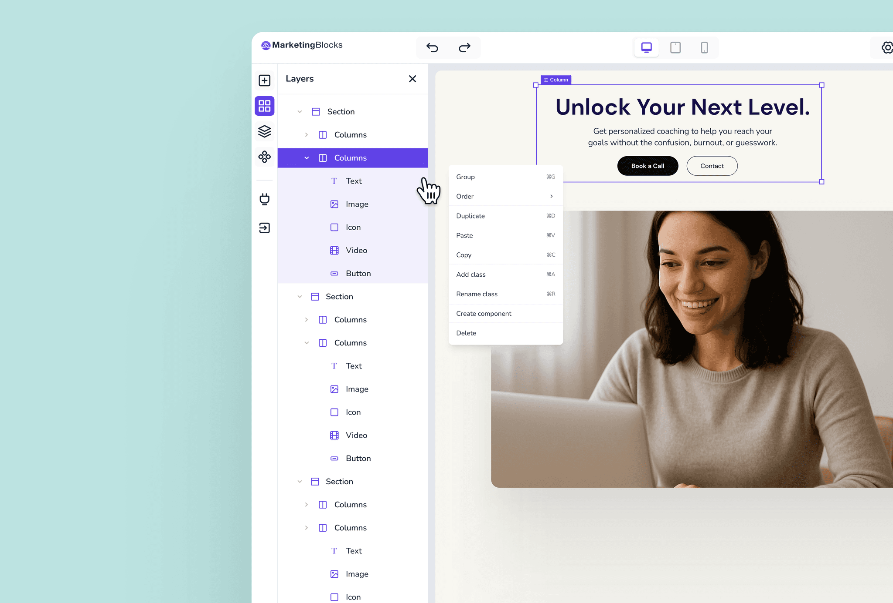
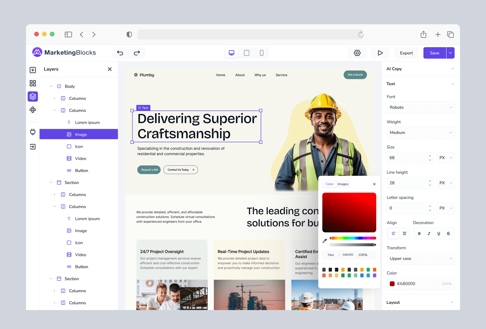
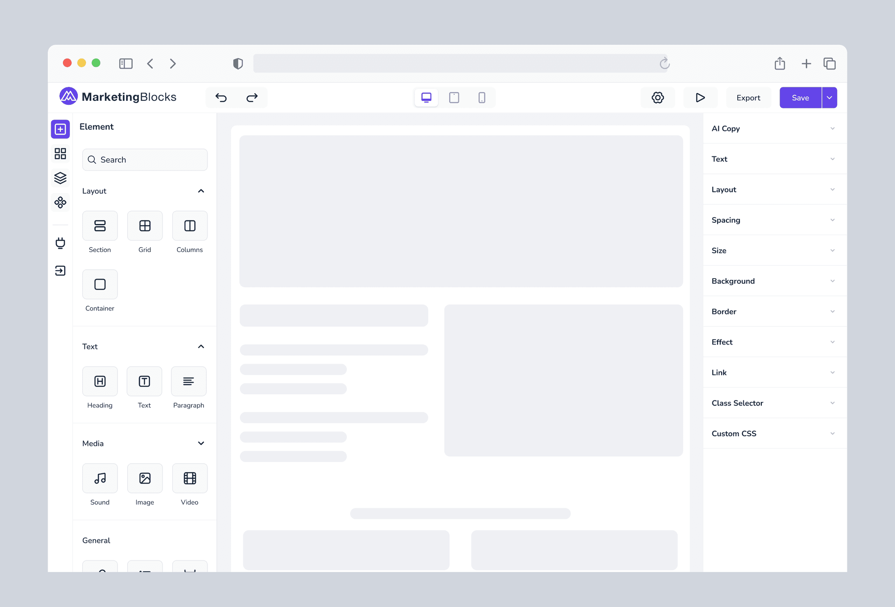
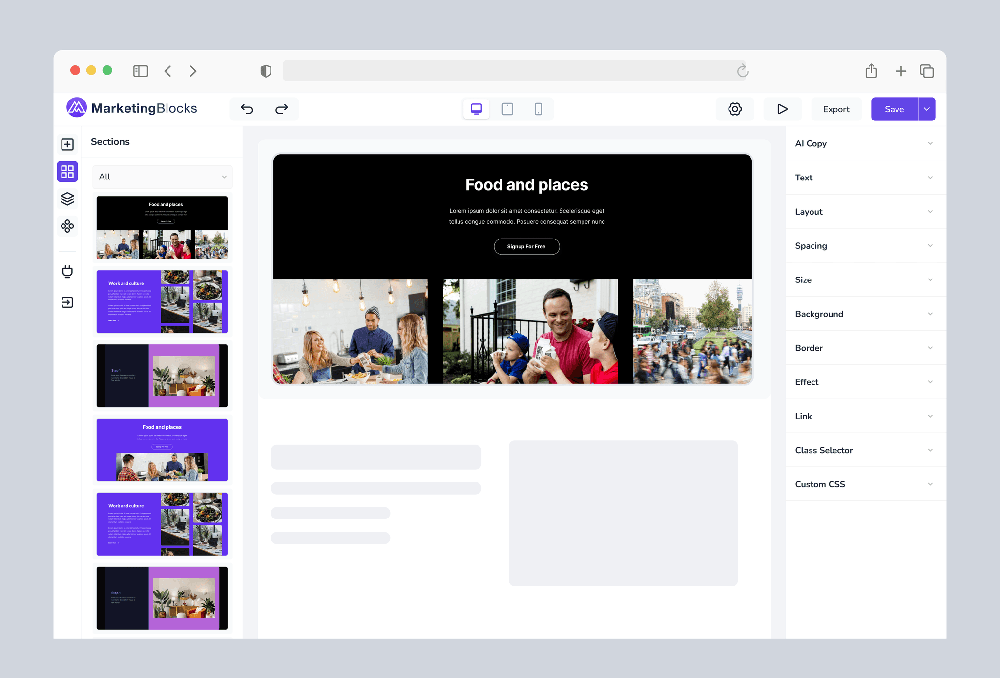
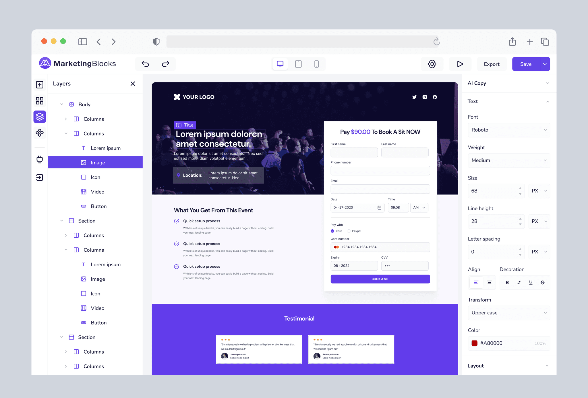
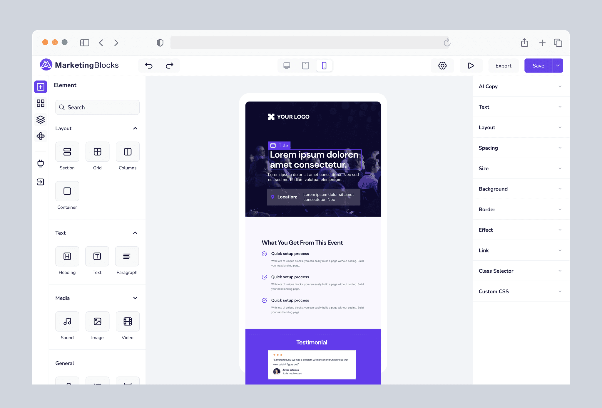
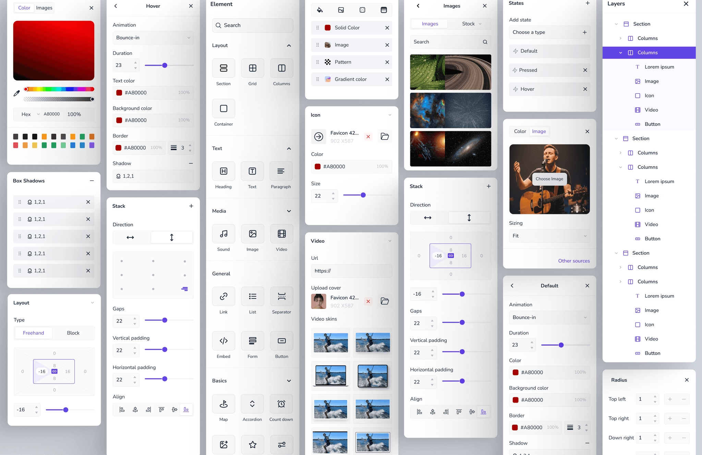

I led the design of MarketingBlocks Page Builder, a no-code editor that lets marketers build their own pages and trust them to work on any screen.

Finding the Right Balance
Marketers wanted the freedom of a slide editor: drag anything anywhere, overlap images, put a button wherever it looks best. But the web doesn’t work that way. To work on mobile, elements have to sit in rows and columns that can stack.

Early builds let users place elements freely, and it broke quickly. An image moved 50px to the right looked fine on desktop and slid off the screen on mobile. Engineering wanted to remove freeform entirely. Before agreeing, I pushed to try a middle path: a “Smart Container” that read where elements sat on desktop and stacked them into the nearest column on mobile.

It worked for simple pages, but not reliably enough for pages that need to convert. For our users, a sales page that breaks on a phone means lost money. So we dropped freeform positioning and invested in a structured drag-and-drop grid. The goal was to make that grid feel as free as possible.
Designing the Editor
I split the workspace into clear zones, so non-technical users always knew where to look: elements to add, the canvas to build on, and settings for whatever is selected.
The grid shows itself only when it’s needed. While dragging, column guides and drop zones appear so users can see exactly where an element will land, then they fade away. This gives users freedom inside a structure that always works on mobile.
I also designed a persistent Layers Panel. Pages quickly fill up with sections, backgrounds, text and images stacked inside each other. The panel shows that structure as a tree, so users can select hidden elements, reorder them and move around the page without fighting the canvas to click the right thing.

The Outcome
The Page Builder is live in MarketingBlocks, used by marketers and business owners to build landing pages, registration pages and sales funnels without code. Pages built in the grid hold up on mobile without manual fixes, which removed the main reason users had to rebuild pages for smaller screens.
The project taught me that flexibility is only useful when the result is reliable. Pushing for what users wanted, and then being honest when the data didn’t support it, gave us an editor that is both accessible and dependable.





